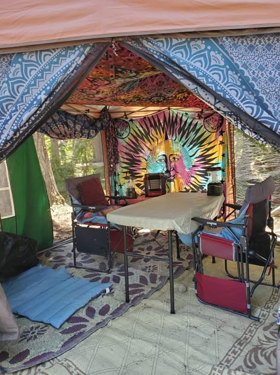
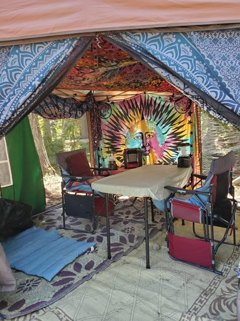

For music lovers, if they wanted to see their favorite musician live, concerts are a great experience. Afterall, it creates a connection between the Musicians and the audience in a way that doesn't compare when just listening to a studio album. Now imagine if someone decided to take a whole 3-4 days off to camp out at a concert of multiple musicians. It no longer becomes just seeing the music live but an endurance test. See how long you can camp out with a bunch of stangers until you're ready to go home.
The most important part is knowing what to bring. Most festivals will give you a list on their site of what you can and cannot bring, however there are some necessities that are a must-have in all Festival experiences.
When going to these types of festivals, there are usually three areas that pretty much make up the festival:
1. You have the Campsite, which is where you will consider your home for the time you're there.
2. Then you have the Vendors area. This is where you can get handmade crafts, cooked food, and in some cases basic supplies you've might have forgotten.
3. And most importantly, the Stage area, where the music is being played. Depending on how big the festival is, there can be significant number of these types of areas all around.
And of course what would a festival be without its community. The festival community is enormous and always looking to help people. Going to a festival alone may make the experience for some less enjoyable. That's where social media apps like Radiate come in, created specifically to connect the festival community. Don't just meet people, but see what events are in your area!
 
